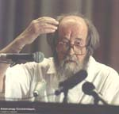
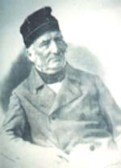

|
12 апреля сего года постоянные читатели и работники городской
библиотеки им. Кропивницкого, наверное, не смогут забыть.
В этот день делегация правительства Москвы во главе с М.Л. Щербаченко, в состав которой вошли и
такие именитые люди, как профессор Парижского университета Нантер, директор издательства "YMCA-Press",
главный редактор "Вестника Русского Христианского Движения" Никита Струве,
директор библиотеки-фонда "Русское зарубежье", генеральный директор издательства "Русский путь"
Виктор Москвин, выходец из нашего города,
писатель и мыслитель Михаил Бузник, ректор Университета Натальи Нестеровой профессор Наталья Нестерова, передала нашей библиотеке уникальный дар - 4700 экземпляров редких и ценных книг издательств "YMCA-Press" и "Русский путь" на сумму более 30 тысяч долларов США. Это - изумительные издания, которые существенно обогатят фонды нашей библиотеки. - Дар книг, которые я счастлив привезти в Николаев, сделан благодаря помощи библиотеки-фонда А.И. Солженицына, - сказал Никита Струве. - Эти книги великих писателей оплачены фондом Александра Исаевича. Ему глубокая благодарность. Кое-какие книги не доехали, скажем, из-за таможенных преград. В дальнейшем желаю вам как можно меньше границ, как можно больше сотрудничества, единения, совместной работы. Городской голова Владимир Чайка выразил признательность парижским и московским гостям: - Одесситы были огорошены, когда узнали, что Николаев и Москва заключили договор о сотрудничестве, сказал Владимир Дмитриевич. - Многие не верили, что к нам могут приехать такие именитые люди, как Никита Алексеевич Струве, Виктор Александрович Москвин. Но это случилось. Вкладываю большое значение в этот визит, и вижу открывающую перспективу в сотрудничестве. Спасибо вам за этот материальный и духовный дар. Это для нас поистине знаковое событие. После церемонии вручения книг в актовом зале библиотеки прошла пресс-конференция с участием представителей московского культурного бомонда. Интерес к гостям из Первопрестольной был так велик, что пресс-конференция переросла в общение гостей с николаевской интеллигенцией, которой в зале было очень много. На встрече говорили о необходимости продолжения культурного сотрудничества. За два дня пребывания в Николаеве гости успели побывать в разных точках нашего города. Представители московского правительства посетили Николаевский морской порт, Н.А. Струве, В.А. Москвин, Н.В. Нестерова, М.Х. Бузник и представитель Николаева в Москве В.Н. Христенко - УГМТУ, где Никита Алексеевич выступил перед студенческой аудиторией, музей Верещагина, Николаевскую обсерваторию. |

А. И. Солженицен |
Не так давно Н.А. Струве неожиданно узнал, что с нашим городом связаны его предки. Так в Николаеве родился тесть Н. Струве, один из самых крупных и глубоких писателей русской православной церкви Александр Ельчанинов. А прапрадед Никиты Алексеевича, основатель Пулковской обсерватории Василий Яковлевич Струве был учителем и наставником первого директора Николаевской морской астрономической обсерватории К.Х. Кнорре. Здесь, в Николаеве, генеральный директор издательства "Русский путь" В.А. Москвин рассказал, что его отец в 1944-м освобождал наш город от немецко-фашистских захватчиков. Так что не такие они, москвичи и парижане, отдаленные географически и исторически люди. А потому договор о сотрудничестве Москвы и Николаева, будем надеяться, - ни в коем случае не декларация красивая, а план взаимовыгодных действий. |

В. Я. Струве 1793 - 1864 гг. |